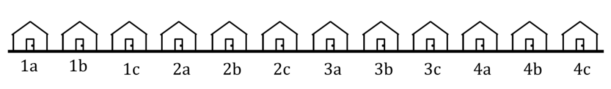

2 Math Prerequisites
2.1 Linear Algebra Fundamentals
Linear algebra is what powers linear regression, logistic regression, and PCA (concepts that we will be studying in this course). This question aims to build an understanding of how matrix-vector operations work.
Consider yourself starstruck: it’s 2016, and you just spotted the first family of music, Beyonce, husband Jay-Z, and their four year-old daughter Blue, shopping for fruit bowls at Berkeley Bowl. Each bowl contains some fruit and the price of a fruit bowl is simply the total price of all of its individual fruit.
Berkeley Bowl has apples for $2, bananas for $1, and cantaloupes for $4 (expensive!). The price of each of these can be written in a vector:
\[\begin{align*} \vec{v} = \begin{bmatrix} 2\\ 1\\ 4 \end{bmatrix} \end{align*}\]
Berkeley Bowl sells the following fruit bowls: 1. 2 of each fruit 2. 5 apples and 8 bananas 3. 2 bananas and 3 cantaloupes 4. 10 cantaloupes
2.1.1 (a)
Define a matrix \(B\) such that \(B\vec{v}\) evaluates to a length 4 column vector containing the price of each fruit bowl. The first entry of the result should be the cost of fruit bowl #1, the second entry the cost of fruit bowl #2, etc.
Answer
Recognize that each of the costs can be expressed as a linear combination of quantities (\(B\)) and prices (\(\vec{v}\)). The matrix \(B\) of quantities should have each row representing the unique fruit bowls, and each column representing the unique fruits.
\[\begin{align*} B = \begin{bmatrix} 2 & 2 & 2\\ 5 & 8 & 0\\ 0 & 2 & 3\\ 0 & 0 & 10 \end{bmatrix} \end{align*}\]
2.1.2 (b)
Beyonce, Jay-Z, and Blue make the following purchases:
- Beyonce buys 2 fruit bowl #1s and 1 fruit bowl #2
- Jay-Z buys 1 of each fruit bowl
- Blue buys 10 fruit bowl #4s
Define a matrix \(A\) such that the matrix expression \(AB\vec{v}\) evaluates to a length 3 column vector containing how much each of them spent. The first entry of the result should be the total amount spent by Beyonce, the second entry the amount spend by Jay-Z, etc.
Answer
We know that \(B\vec{v}\) represent the price of each fruit bowl. Therefore, in order to figure out how much each of them spent, we can multiply \(A\), a matrix containing the fruit bowls bought by each of the individuals, by the vector of prices \(B\vec{v}\). Each row in \(A\) should represent one individual, and each column should represent one fruit (\(B\vec{v}\) being \(4\times1\) tells us that \(A\) should be \(3\times4\) instead of the other way around)
\[\begin{align*} A = \begin{bmatrix} 2 & 1 & 0 & 0\\ 1 & 1 & 1 & 1\\ 0 & 0 & 0 & 10 \end{bmatrix} \end{align*}\]
2.1.3 (c)
Let’s suppose Berkeley Bowl changes their fruit prices, but you don’t know what they changed their prices to. Beyonce, Jay-Z and Blue buy the same quantity of fruit bowls and the number of fruit in each bowl is the same, but now they each spent these amounts:
\[\begin{align*} \vec{x} = \begin{bmatrix}80 \\ 80 \\ 100\end{bmatrix} \end{align*}\]
Let \(\vec{v_2}\) be a vector containing the new prices of each fruit. Express \(\vec{v_2}\) in terms of \(A\), \(B\), and \(\vec{x}\).
Answer
We know from previous parts that \(\vec{x} = AB\vec{v_2}\). We can multiply both sides by \((AB)^{-1}\), resulting in \(\vec{v_2} = (AB)^{-1}\vec{x}\). Note that this assumes that \(AB\) is invertible!
2.1.4 (d)
In the previous part, we assumed that \(AB\) was invertible. Why is \(AB\) (as calculated below) invertible? State two conditions for an arbitrary matrix to be invertible.
\[\begin{align*} AB = \begin{bmatrix} 9 & 12 & 4\\ 7 & 12 & 15\\ 0 & 0 & 100 \end{bmatrix} \end{align*}\]
Answer
Besides needing to be a square matrix (same number of rows and columns), answers include, but are not limited to:
The column vectors are linearly independent (meaning the matrix is full column rank)
The determinant of the matrix is nonzero
For (2), we can compute the determinant of a \(3 \times 3\) matrix by the following computation:
\[\begin{align*} det(AB) &= 9*det(\begin{bmatrix}12 & 15 \\ 0 & 100\end{bmatrix}) - 12 * det(\begin{bmatrix}7 & 15 \\ 0 & 100\end{bmatrix}) + 4 * det(\begin{bmatrix}7 & 12 \\ 0 & 0\end{bmatrix})\\ &= 9 * (12*100 - 15*0) - 12 * (7 * 100 - 15 * 0) + 4 * (7 * 0 - 12 * 0)\\ &= 2400 \neq 0 \end{align*}\]
2.2 More Linear Algebra
In this question, we will apply various essential concepts in linear algebra.
2.2.1 (a)
Linear dependence among a set of vectors \(\{\vec{v_1}, \vec{v_2}, ..., \vec{v_n}\}\) is defined as follows:
The column rank of a matrix \(M\) is the maximal number of linearly independent column vectors in \(M\). A full column rank matrix has a column rank equal to the number of column vectors.
Now consider the matrix \(M = \begin{bmatrix}2 & 0 \\ 0 & 3\end{bmatrix}\) containing two column vectors \(\vec{v_1} = \begin{bmatrix}2 \\ 0\end{bmatrix}\) and \(\vec{v_2} = \begin{bmatrix} 0 \\ 3 \end{bmatrix}\). Is it possible to construct the zero vector using a linear combination of the column vectors? What can be concluded about the column rank of the matrix \(M\)?
Answer
No, it is impossible to construct the zero vector if we use at least one \(\alpha_i \neq 0\) since the first vector can’t affect the second dimension and vice versa. Hence, neither of the vectors can ”undo” each other. As a more formal proof:
\[\begin{align*} \alpha_1\vec{v_1} + \alpha_2\vec{v_2} = \begin{bmatrix} 2\alpha_1 \\ 3\alpha_2 \end{bmatrix} \end{align*}\]
If at least one of the \(\alpha\) values are not \(0\), then the vector cannot be \(\vec{0}\). Hence, this matrix is full column rank (i.e., the set of vectors is linearly independent).
2.2.2 (b)
The inverse of a square invertible matrix \(M\) is denoted \(M^{-1}\). It is defined as a matrix such that \(MM^{-1} = I\) and \(M^{-1}M = I\). The matrix \(I\) is a special matrix known as the identity matrix, where the diagonal elements are \(1\) and the non-diagonal elements are \(0\).
Consider the inverse matrix \(M^{-1} = \begin{bmatrix}a & b \\ c & d\end{bmatrix}\) of \(M\). Carry out the matrix multiplication \(MM^{-1}\), and determine what \(M^{-1}\) must be. Recall that \(M = \begin{bmatrix}2 & 0 \\ 0 & 3 \end{bmatrix}\).
Answer
We carry out the matrix multiplication:
\[\begin{align*} \begin{bmatrix}2 & 0 \\ 0 & 3\end{bmatrix}\begin{bmatrix}a & b \\ c & d\end{bmatrix} = \begin{bmatrix}2a & 2b \\ 3c & 3d\end{bmatrix} \end{align*}\]
Hence, since we know that \(MM^{-1} = I, b = c = 0\) and \(2a = 1\) and \(3d = 1\). Thus, the inverse matrix is:
\[\begin{align*} M^{-1} = \begin{bmatrix}\frac{1}{2} & 0 \\ 0 & \frac{1}{3}\end{bmatrix} \end{align*}\]
An interesting fact about diagonal matrices (i.e. matrices that are nonzero on the diagonal entries but zero everywhere else) is that their inverse is simply the elementwise multiplicative inverse (reciprocal) of the diagonal entries!
2.2.3 (c)
Consider a difference matrix \(Q = \begin{bmatrix}1 & 0 & 5 \\ 0 & 1 & 5\end{bmatrix} = \begin{bmatrix}\vec{v_1} & \vec{v_2} & \vec{v_3}\end{bmatrix}\). What is the column rank of the matrix? Is the matrix invertible?
Answer
We can construct the zero vector with all of \(\vec{v_1}\), \(\vec{v_2}\), and \(\vec{v_3}\) with the combination \(5\vec{v_1} + 5\vec{v_2} = \vec{v_3} = 0\), so we know that the matrix \(Q\) does not have full column rank. However, we are not able to construct the zero vector using only any of the two columns. This tells us that the column rank is 2.
The matrix is not invertible since it is not square (it has more columns than rows).
2.2.4 (d)
The transpose of a matrix is an opration on matrices of any size in which the rows and columns are “flipped”. In more precise terms, if \(A\) is an \(m \times n\) matrix, its transpose \(A^T\) is the \(n \times m\) matrix whose element in the ith row and jth column is the element in the jth row and ith column of \(A\).
Consider a matrix \(R\), which is equal to the transpose of \(Q\): \(R = Q^T\). What is the column rank of \(R\)?
Answer
We take the transpose:
\[\begin{align*} R = Q^T = \begin{bmatrix}1 & 0\\ 0 & 1 \\ 5 & 5\end{bmatrix} \end{align*}\]
The column rank is 2 because neither column is a scalar multiple of the other. Thus, this matrix is full column rank.
2.3 Calculus
In this class, we will have to determine which inputs to functions minimize the output (for instance, when we choose a model and need to fit it to our data). This process involves taking derivatives. In cases where we have multiple inputs, the derivative of our function with respect to one of our inputs is called a partial derivative. For example, given a function \(f(x, y)\), the partial derivative with respect to \(x\) (denoted by \(\frac{\partial f}{\partial x}\)) is the derivative of \(f\) with respect to \(x\), taken while treating all other variables as if they’re constants.
Suppose we have the following scalar-values function on \(x\) and \(y\):
\[\begin{align*} f(x, y) = x^2 + 4xy + 2y^3 + e^{-3y} + \ln(2y) \end{align*}\]
2.3.1 (a)
Compute the partial derivative of \(f(x, y)\) with respect to \(x\).
Answer
\[\begin{align*} \frac{\partial}{\partial x}f(x, y) = 2x + 4y \end{align*}\]
2.3.2 (b)
Compute the partial derivative of \(f(x, y)\) with respect to \(y\).
Answer
\[\begin{align*} \frac{\partial}{\partial y}f(x, y) = 4x + 6y^2 - 3e^{-3y} + \frac{1}{y} \end{align*}\]
2.3.3 (c)
The gradient of a function \(f(x, y)\) is a vector of its partial derivatives. That is,
\[\begin{align*} \nabla f(x, y) = \begin{bmatrix}\frac{\partial f}{\partial x} & \frac{\partial f}{\partial y}\end{bmatrix}^T \end{align*}\]
As a vector, \(\nabla f(x, y)\) has both a magnitude and direction. The direction of \(\nabla f(x, y)\) corresponds to the direction in which the graph of \(f(x, y)\) is increasing most steeply from the point \((x, y)\). The magnitude gives a sense of how steep the ascent up the graph is in this particular direction. This is a generalization of the single variable case, where \(f'(x)\) is the rate of changes of \(f\), at the point \(x\). In the two-variable case, we specify a direction to evaluate the rate of change, since the function is technically changing in all directions from \((x, y)\).
Using your answers to the above two parts, compute \(\nabla f(x, y)\) and evaluate the gradient at the point \((x = 2, y = -1)\).
Answer
\[\begin{align*} \nabla f(x, y) &= \begin{bmatrix} 2x + 4y\\ 4x + 6y^2 - 3e^{-3y} + \frac{1}{y} \end{bmatrix} \\\\ \nabla f(2, -1) &= \begin{bmatrix} 2(2) + 4(-1)\\ 4(2) + 6(-1)^2 - 3e^{-3(-1)} + \frac{1}{(-1)} \end{bmatrix}\\ &= \begin{bmatrix} 0 \\ 13 - 3e^3 \end{bmatrix} \end{align*}\]
2.4 Probability & Sampling

Ishani wants to measure interest for a party on her street. She assigns numbers and letters to each house on her street as illustrated above. She picks a letter “a”, “b”, or “c” at random and then surveys every household on the street ending in that letter.
2.4.1 (a)
What is the chance that two houses next door to each other are both in the sample?
Answer
None of the adjacent houses end in the same letter, so the chance is zero. This is an example of a cluster sample with each cluster representing each group of houses ending in the same letter.
Note: We will no longer be following Ishani’s sampling method of picking a letter and surveying households ending in that letter for subsequent questions.
2.4.2 (b)
Ishani decides to collect a simple random sample (SRS) of four houses. What is the probability that house 1a is not in Ishani’s simple random sample of four houses?
Answer
Recall that a simple random sample is a sample drawn uniformly at random without replacement.
This time, we are taking a sample of 4 houses. But, we can apply a similar approach from part b to determine the probability of missing house 1a in each of the four selected houses. Then we multiply the four probabilities together to get our answer. The probability that house 1a is not in Ishani’s sample is \(\frac{11}{12}*\frac{10}{11}*\frac{9}{10}*\frac{8}{9} = \frac{8}{12} = \frac{2}{3}\)
2.4.3 (c)
Instead of surveying every member of each house from the SRS of four houses, Ishani decides to survey two members chosen without replacement from each selected house. Four people live in house 1a, one of whom is Bob. What is the probability that Bob is not chosen in Ishani’s new sample?
Answer
The probability that house 1a is included in Ishani’s initial SRS of four houses is \(\frac{1}{3}\). Given that house 1a is selected, the probability that Bob is one of the two people surveyed is \(\frac{1}{2}\). Therefore, the probability that Bob is surveyed is \(\frac{1}{3}*\frac{1}{2} = \frac{1}{6}\). Thus, the probability that Bob is not selected is \(1 - \frac{1}{6} = \frac{5}{6}\)
2.4.4 (d)
To increase interest in her party, Ishani randomly selects 4 houses to gift a small present. Assuming she samples with replacement (meaning that a house could be chosen multiple times), what’s the probability that all “c” houses are given a gift?
Answer
For all “c” houses to be selected, the first house selected can be any of the 4 “c” houses out of the 12 houses total. The second house selected can be any of the 3 “c” houses left (out of 12 houses total). the third house can be any of the 2 “c” houses left, and the final selected house must be the last “c” house left. Therefore, we get \(\frac{4}{12}*\frac{3}{12}*\frac{2}{12}*\frac{1}{12} = \frac{4!}{12^4}\)